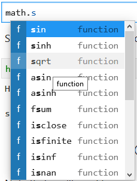

Loading and using modules
Contents
Loading and using modules¶
In this section we provide some additional background on loading and using modules in Python. Modules are not much different from the Python script files produced in the previous section, but there are many Python modules that are freely available and this is one of the best things about using Python. You can find modules to do many common programming tasks in Python!
Modules, packages and libraries?¶
A Python module 1 refers to a piece of Python code that is designed to execute a specific task. Technically, modules are simply Python script files (with the file extension .py) that contain function definitions and other statements. Python packages 2 are a way of organizing modules into larger entities.
Modules and packages are similar to what are more generally called libraries in programming languages, which again contain code related to specific tasks such as mathematical operations. There are a HUGE number of Python modules/packages, and many of them greatly extend what can be done in a normal Python program. In fact, the abundance of free Python modules is one of the best reasons to learn and start using Python.
The words “module”, “package” and “library” are often used interchangeably.
Loading modules¶
Python modules can be loaded in a number of different ways.
Let’s start simple with the math module. Here, we can load the math module using the import statement and then we are able to explore some of the functions in the module, such as the square root function sqrt.
import math
math.sqrt(81)
Here we have loaded the math module by typing import math, which tells Python to read in the functions in the math module and make them available for use. In this example, we see that we can use a function within the math library by typing the name of the module first, a period, and then the name of function we would like to use afterward (e.g., math.sqrt()).
Built-in functions¶
Built-in functions 3 such as print() are always available without importing anything.
print("Hello world!")
Technically, the built-in functions belong to a module called builtins.
Renaming imported modules¶
We can also rename modules when they are imported, which can be helpful when using modules with longer names. Let’s import the math module, but rename it to m using the format import module as name. Then we can using the sqrt function from the math library and check the type of our module named m.
import math as m
m.sqrt(49)
type(m)
Here, we imported the math module with the name m instead of math. We will see other examples later in the course where using an alternate name is rather useful. For example, in the next chapter we will start using the pandas library for data analysis. It is customary to import pandas as pd.
import pandas as pd
Importing a single function¶
It is also possible to import only a single function from a module, rather than the entire module. This is sometimes useful when needing only a small piece of a large module. We can do this using the form from module import function. Let’s import the sqrt function from the math module using this approach. Again, we can test using our results by using the function afterwards.
from math import sqrt
sqrt(121)
Though this can be useful, it has the drawback that the imported function could conflict with other built-in or imported function names, and you lose the information about which module contains the imported function. You should only do this when you truly need to.
Importing a submodule¶
Some modules have submodules that can also be imported without importing the entire module. We may see examples of this later when making data plots using the pyplot sub-module from the Matplotlib module 4. In case you’re curious, here is an example.
import matplotlib.pyplot as plt
# Plot a simple x y line graph with the default settings
plt.plot([1, 2, 3, 4, 5], [5, 2, 3, 4, 1])
Figure 1.15. Example plot using the Matplotlib module.
You can read more about the plot plotting function in the matplotlib pyplot documentation 5. We will introduce matplotlib in detail in Chapter 3.
Using module functions¶
As we see above, the easiest way to use a module is to import it an then use its functions by typing modulename.functionname() and providing the necessary arguments. Yes, it is that simple.
However, there are times that you may not know the names of all of the functions in a given module, or which are part of a module. You can view the list of functions that are part of a module by using the dir() function.
print(dir(math))
In Jupyter notebooks you can also browse the available modules by typing in modulename. and then pressing the tab key:

So that’s helpful, but what about when you don’t know what a given function does? The easiest solution is to use the help() function (after importing the module). Let’s have a look at the help for the math.sin function.
help(math.sin)
What should I not do?¶
Modules are very useful in Python, but there are a few things to avoid.
from X import *¶
Don’t use from X import *. This may be easier to understand by way of an example, but assuming X above is a Python module, from X import * will import all of the functions in module X. Though you might think this is helpful, it is much better to simply import X or import X as Y to keep the connection between the functions and their module. It is also much more likely you will encounter conflicting names when using from X import *.
Poor names when renaming on import¶
Don’t use confusing names when renaming on import. Be smart when you import modules, and follow generally used conventions (import pandas as pd is a good way to do things!). If you want to make the module name shorter on import, pick a reasonable abbreviation. For instance, import matplotlib as m could be confusing, especially if we used import math as m above, and might do so in other Jupyter notebooks or script files. Similarly, import matplotlib as math is perfectly OK syntax in Python, but bound to cause trouble. Remember, people need to be able to read and understand the code you write. Keep it simple and logical.
According to the good coding practices described in PEP 8 6, we should always import modules at the top of the file. In this lesson, we are demonstrating how to import different modules along the way, but in general it would be better to import requried modules as the very first thing. PEP 8 refers more to traditional script files, but we can apply the guideline to Jupyter Notebook files by placing our imports the first code cell in the notebook.
Installing packages¶
If you have installed Python on your own computer, we recommend using the Conda package management system 7 that comes with the Anaconda and Miniconda Python installers. Using Conda, you can list package names and versions using the conda list command in a terminal.
It’s also good to be aware of pip, the package installer for python 8. Pip and conda are often used for similar purposes, but the key difference is that pip is used for installing packages written in Python, while conda handles packages that might also contain code written in other languages. Generally, we encourage you to use conda when installing packages (and within conda, it is preferable to use the same channel for installations). However, sometimes you might need a package that is not available via conda, but can be installed with pip. You can read more about differences and similarities of conda an pip at https://www.anaconda.com/understanding-conda-and-pip/.
In a Jupyter Notebook, you can type in help("modules") to see the complete list of installed packages in Python. However, the output is a bit clumsy and hard to read…
# List all available modules. Note: when running this command, you might first get several
# warnings related to deprecated packages etc.
# We have commented the command out here to limit output in the book text
# help("modules")